산업안전지도사 (2015-04-18 기출문제)
1과목: 산업안전보건법령
1. 산업안전보건법령상 안전보건관리규정의 작성 등에 관한 설명으로 옳지 않은 것은?
- 안전보건관리규정을 작성하여야 할 사업의 사업주는 안전보건관리규정을 작성하여야 할 사유가 발생한 날부터 30일 이내에 안전보건관리규정을 작성하여야 한다.
- 안전보건관리규정에는 작업장 안전관리에 관한 사항, 안전ㆍ보건교육에 관한 사항이 포함되어야 한다.
- 사업주가 안전보건관리규정을 작성하는 경우에는 소방ㆍ가스ㆍ전기ㆍ교통 분야 등의 다른 법령에서 정하는 안전관리에 관한 규정과 통합하여 작성할 수 있다.
- 안전보건관리규정을 변경할 사유가 발생한 경우에는 그 사유를 안 날부터 15일 이내에 작성하여야 한다.
- 안전보건관리규정이 해당 사업장에 적용되는 단체협약 및 취업규칙에 반하는 경우, 안전보건관리규정 중 단체협약 또는 취업규칙에 반하는 부분에 관하여는 그 단체협약 또는 취업규칙으로 정한 기준에 따른다.
(정답률: 77%)

2. 산업안전보건법령상 사업 내 안전ㆍ보건교육의 교육과정, 교육대상 및 교육시간을 나타낸 표이다. 교육과정 및 교육대상별 교육시간이 옳지 않은 것은?
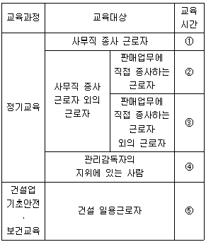
- 매분기 2시간 이상
- 매분기 3시간 이상
- 매분기 6시간 이상
- 연간 16시간 이상
- 4시간
(정답률: 87%)
3. 산업안전보건법령상 근로자에 대한 안전ㆍ보건에 관한 교육을 사업주가 자체적으로 실시하는 경우에 교육을 실시할 수 있는 사람에 해당하지 않는 사람은?
- 산업안전지도사 또는 산업보건지도사
- 한국산업안전보건공단에서 실시하는 해당 분야의 강사요원 교육과정을 이수한 사람
- 해당 사업장의 안전보건관리책임자, 관리감독자 및 산업보건의
- 산업안전ㆍ보건에 관하여 학식과 경험이 있는 사람으로서 고용노동부장관이 정하는 기준에 해당하는 사람
- 산업안전ㆍ보건에 관한 전문적인 지식과 경험이 있다고 사업주가 인정하는 전문강사요원
(정답률: 96%)
4. 산업안전보건법령상 위험기계인 불도저를 타인에게 대여하는 자가 해당 불도저를 대여받은 자에게 유해ㆍ위험 방지조치로서 서면에 적어 발급해야 할 사항이 아닌 것은?
- 해당 불도저의 능력
- 해당 불도저의 특성 및 사용 시의 주의사항
- 해당 불도저의 수리ㆍ보수 및 점검 내역
- 해당 불도저의 조작가능자격
- 해당 불도저의 주요 부품의 제조일
(정답률: 89%)
5. 산업안전보건법령상 유해하거나 위험한 작업의 도급에 대한 인가를 받기 위해 제출하는 도급인가 신청서에 첨부하는 도급대상 작업의 공정도에 포함되어야 할 것을 모두 고른 것은?
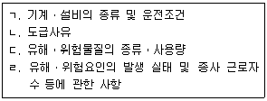
- ㄱ, ㄴ
- ㄱ, ㄷ
- ㄴ, ㄹ
- ㄱ, ㄷ, ㄹ
- ㄴ, ㄷ, ㄹ
(정답률: 85%)
6. 산업안전보건법령상 자율안전확인대상 기계ㆍ기구등에 해당하는 것을 모두 고른 것은?
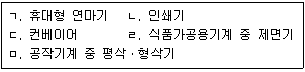
- ㄱ, ㄴ
- ㄴ, ㄷ
- ㄱ, ㄷ, ㅁ
- ㄷ, ㄹ, ㅁ
- ㄴ, ㄷ, ㄹ, ㅁ
(정답률: 89%)
7. 산업안전보건법령상 제조ㆍ수입ㆍ양도ㆍ제공 또는 사용이 금지되는 유해물질에 해당하는 것은?
- 함유된 용량의 비율이 3퍼센트인 백연을 함유한 페인트
- 오로토-톨리딘과 그 염
- 함유된 용량의 비율이 4퍼센트인 벤젠을 함유하는 고무풀
- 알파-나프틸아민과 그 염
- 벤조트리클로리드
(정답률: 82%)
8. 산업안전보건법령상 안전검사에 관한 설명으로 옳은 것은?
- 건설현장에서 사용하는 크레인은 최초로 설치한 날부터 1년마다 안전검사를 실시한다.
- 건설현장 외에서 사용하는 리프트는 사업장에 설치가 끝난 날부터 3년 이내에 최초 안전검사를 실시하되, 그 이후부터 2년마다 안전검사를 실시한다.
- 건설현장에서 사용하는 곤돌라는 사업장에 설치가 끝난 날부터 4년 이내에 최초 안전검사를 실시한다.
- 건설현장 외에서 사용하는 크레인은 최초 안전검사를 실시한 이후부터 3년마다 안전검사를 실시한다.
- 다른 법령에 따라 안전성에 관한 검사나 인증을 받은 경우에는 산업안전보건법령상의 안전검사가 면제된다.
(정답률: 82%)
9. 산업안전보건법령상 도급인인 사업주가 도급사업 시의 안전ㆍ보건조치로서 사업별 작업장에 대해 순회점검하여야 하는 횟수가 옳은 것은?
- 제조업 - 3일에 1회 이상
- 서적, 잡지 및 기타 인쇄물 출판업 - 1주일에 1회 이상
- 금속 및 비금속 원료 재생업 - 2일에 1회 이상
- 건설업 - 1주일에 1회 이상
- 토사석 광업 - 1개월에 1회 이상
(정답률: 91%)
10. 산업안전보건법령상 직무교육에 관한 설명으로 옳은 것은? (단, 전직하여 신규로 선임된 경우는 고려하지 않음)
- 직무교육기관의 장은 직무교육을 실시하기 15일 전까지 교육 일시 및 장소 등을 직무교육 대상자에게 알려야 한다.
- 보건관리자로 의사가 선임된 경우 선임된 후 3개월 이내에 직무를 수행하는 데 필요한 신규교육을 받아야 한다.
- 재해예방 전문지도기관에서 지도업무를 수행하는 사람은 해당 직위에 선임된 후 6개월 이내에 직무를 수행하는 데 필요한 신규교육을 받아야 한다.
- 안전보건관리책임자는 신규교육을 이수한 후 매 3년이 되는 날을 기준으로 전후 3개월 사이에 안전ㆍ보건에 관한 보수교육을 받아야 한다.
- 안전관리자로 선임된 자는 해당 직위에 선임된 후 6개월 이내에 직무를 수행하는 데 필요한 신규교육을 받아야 한다.
(정답률: 85%)
11. 산업안전보건법령상 유해하거나 위험한 기계ㆍ기구등의 방호조치 등과 관련하여 근로자의 준수사항으로 옳은 것은?
- 방호조치를 해체한 후에 그 사유가 소멸된 경우, 해체상태 그대로 사용한다.
- 방호조치가 필요 없다고 판단한 경우, 즉시 방호조치를 직접 해체하고 사용한다.
- 방호조치가 된 기계ㆍ기구에 이상이 있는 경우, 즉시 방호조치를 직접 해체해야 한다.
- 방호조치를 해체하려는 경우, 한국산업안전보건공단에 신고한 후 해체하여야 한다.
- 방호조치의 기능이 상실된 것을 발견한 경우, 지체 없이 사업주에게 신고한다.
(정답률: 88%)
12. 산업안전보건법령상 안전인증에 관한 설명으로 옳지 않은 것은?
- 안전인증대상인 프레스의 주요 구조 부분을 변경하는 경우 안전인증을 받아야 한다.
- 안전인증을 신청하는 경우에는 고용노동부장관이 정하여 고시하는 바에 따라 안전인증 심사에 필요한 시료(試料)를 제출하여야 한다.
- 안전인증을 받은 자는 안전인증제품에 관한 자료를 안전인증을 받은 제품별로 기록ㆍ보존하여야 한다.
- 기계ㆍ기구 및 방호장치ㆍ보호구가 유해ㆍ위험한 기계ㆍ기구ㆍ설비등 인지를 확인하는 심사는 서면심사로서 15일내에 심사를 완료해야 한다.
- 지방고용노동관서의 장은 안전인증대상 기계ㆍ기구등을 제조ㆍ수입 또는 판매하는 자에게 자료의 제출을 요구할 때에는 10일 이상의 기간을 정하여 문서로 요구하되, 부득이한 사유가 있을 때에는 신청을 받아 30일의 범위에서 그 기간을 연장할 수 있다.
(정답률: 86%)
13. 산업안전보건법령상 건설업체 산업재해발생률 및 산업재해 발생 보고의무 위반 건수 산정 기준과 방법에 관한 설명으로 옳지 않은 것은?
- 산업재해발생률 및 산업재해 발생 보고의무가 있는 건설업체의 산업재해발생률은 환산 재해자 수를 상시 근로자 수로 나눈 환산재해율로 산출하되, 소수점 셋째 자리에서 반올림한다.
- 사망재해자의 재해 발생 시기가 2014.11.20. 이고 사망 시기가 2015.4.8. 인 경우 사망재해자에 대해서는 부상재해자의 5배로 하여 가중치를 부여할 수 있다.
- 둘 이상의 업체가 「국가를 당사자로 하는 계약에 관한 법률」에 따라 공동계약을 체결하여 공사를 공동이행 방식으로 시행하는 경우 해당 현장에서 발생하는 재해자수는 공동수급업체의 출자 비율에 따라 분배한다.
- 산업재해자 중 근로자간 폭행에 의한 경우로서 사업주의 법 위반으로 인한 것이 아니라고 인정되는 재해에 의한 재해자는 재해자 수 산정에서 제외한다.
- 산업재해의 사망재해자 중 고혈압 등 개인지병에 의한 경우로 해당 사고발생의 직접적인 원인이 사업주의 법 위반으로 인한 것이 아니라고 인정되는 재해자에 대해서는 가중치를 부여하지 않는다.
(정답률: 89%)
14. 산업안전보건법령상 중대재해에 해당하는 것은?
- 사망자가 1명 발생한 재해
- 2억 원의 경제적 손실이 발생한 재해
- 장애등급을 판정받은 부상자가 발생한 재해
- 부상자 또는 직업성질병자가 동시에 5명 발생한 재해
- 1개월의 요양이 필요한 부상자가 동시에 3명 발생한 재해
(정답률: 89%)
15. 산업안전보건법령상 고용노동부장관이 산업재해를 예방하기 위해 필요하다고 인정하여 사업장의 산업재해 발생건수, 재해율 또는 그 순위 등을 공표할 수 있는 대상 사업장을 모두 고른 것은?
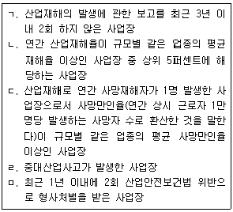
- ㄱ, ㄷ
- ㄴ, ㅁ
- ㄷ, ㄹ
- ㄱ, ㄴ, ㄹ
- ㄴ, ㄷ, ㅁ
(정답률: 79%)
16. 산업안전보건법령상 지방고용노동관서의 장이 사업주에게 안전관리자나 보건관리자(이하 ‘관리자’라 함)를 정수 이상으로 증원하게 하거나 교체하여 임명할 것을 명할 수 있는 경우에 해당되지 않는 것은?
- 중대재해가 연간 5건 발생한 경우
- 상시근로자가 100명인 사업장에서 직업성질병자 발생 당시 사용한 니트로벤젠(Nitrobenzene)으로 인한 직업성질병자가 연간 5명 발생한 경우
- 상시근로자가 100명인 사업장에서 직업성질병자 발생 당시 누출된 유해광선인 자외선으로 인한 직업성질병자가 연간 3명 발생한 경우
- 해당 사업장의 연간재해율이 같은 업종의 평균재해율의 2배인 경우
- 관리자가 질병이나 그 밖의 사유로 4개월간 직무를 수행할 수 없게 된 경우
(정답률: 78%)
17. 산업안전보건법령상 안전관리자 선임 등에 관한 설명으로 옳은 것은?
- 건설업의 경우에는 공사금액이 50억 원 이상인 사업장에는 안전관리 업무만을 전담하는 안전관리자를 두어야 하고, 공사금액이 3억 원 이상 50억 원 미만인 사업장에는 안전관리 업무 아닌 다른 업무를 겸하는 겸직 안전관리자를 둘 수 있다.
- 동일한 사업주가 경영하는 둘 이상의 사업장이 같은 시ㆍ군ㆍ구(자치구를 말한다) 지역에 소재하는 경우 그 둘 이상의 사업장에 1명의 안전관리자를 공동으로 둘 수 있으며, 이 경우 각 사업장의 상시 근로자 수는 300명 이내이어야 한다.
- 사업주는 안전관리자를 선임한 경우에는 고용노동부령으로 정하는 바에 따라 선임한 날부터 30일 이내에 증명할 수 있는 서류를 제출하여야 한다.
- 상시 근로자 50명인 전기장비 제조업을 하는 사업장으로 사내 하도급업체를 두고 있는 경우 수급인인 사업주가 별도로 안전관리자를 둔 경우에는 도급인인 사업주는 안전관리자를 선임하지 아니할 수 있다.
- 상시 근로자 200명을 사용하는 가구 제조업의 경우 안전관리자의 업무를 안전관리전문기관에 위탁할 수 있다.
(정답률: 53%)
18. 산업안전보건법령상 사업장의 관리감독자가 수행하여야 하는 업무에 해당하는 것은?
- 안전보건관리규정의 작성 및 변경에 관한 사항
- 산업재해에 관한 통계의 기록 및 유지에 관한 사항
- 사업장 내 관리감독자가 지휘ㆍ감독하는 작업과 관련된 기계ㆍ기구 또는 설비의 안전ㆍ보건 점검 및 이상 유무의 확인에 관한 사항
- 산업재해의 원인 조사 및 재발 방지대책 수립에 관한 사항
- 안전ㆍ보건과 관련된 안전장치 및 보호구 구입 시의 적격품 여부 확인에 관한 사항
(정답률: 87%)
19. 산업안전보건법령상 근로시간 연장의 제한에 관한 내용으로 ( )에 들어갈 숫자를 순서대로 옳게 나열한 것은?
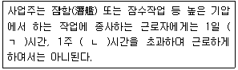
- ㄱ: 4, ㄴ: 30
- ㄱ: 5, ㄴ: 32
- ㄱ: 6, ㄴ: 34
- ㄱ: 7, ㄴ: 36
- ㄱ: 8, ㄴ: 38
(정답률: 84%)
20. 산업안전보건법령상 건강진단에 관한 내용으로 ( ) 안에 들어갈 내용을 순서대로 옳게 나열한 것은?
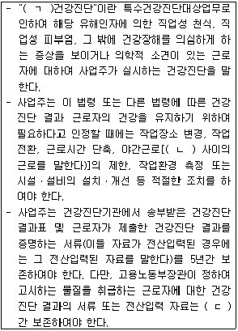
- ㄱ: 특수, ㄴ: 오후 10시부터 오전 6시까지, ㄷ: 10년
- ㄱ: 수시, ㄴ: 오후 10시부터 오전 6시까지, ㄷ: 30년
- ㄱ: 특수, ㄴ: 오후 10시부터 오전 6시까지, ㄷ: 20년
- ㄱ: 수시, ㄴ: 오후 8시부터 오전 4시까지, ㄷ: 30년
- ㄱ: 특별, ㄴ: 오후 8시부터 오전 4시까지, ㄷ: 20년
(정답률: 90%)
21. 산업안전보건법령상 사업주는 일정한 질병이 있는 근로자를 고기압 업무에 종사하도록 하여서는 아니 된다. 이 질병에 해당하지 않는 것은?
- 빈혈증
- 메니에르씨병
- 바이러스 감염에 의한 구순포진
- 관절염
- 천식
(정답률: 89%)
22. 산업안전보건법령상 작업환경측정에 관한 설명으로 옳은 것을 모두 고른 것은?
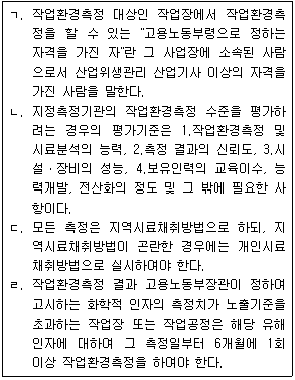
- ㄱ
- ㄱ, ㄴ
- ㄴ, ㄷ
- ㄷ, ㄹ
- ㄱ, ㄴ, ㄷ
(정답률: 60%)
23. 산업안전보건법령상 공정안전보고서에 관한 설명으로 옳지 않은 것은?
- 공정안전보고서를 작성하여야 하는 사업장의 사업주는 산업안전보건위원회가 설치되어 있지 아니한 경우 근로자대표의 의견을 들어 작성하여야 한다.
- 공정안전보고서에는 공정안전자료, 공정위험성 평가서, 안전운전계획, 비상조치계획이 포함되어야 한다.
- 사업주가 공정안전보고서를 제출한 경우에는 해당 유해ㆍ위험설비에 관하여 유해ㆍ위험방지계획서를 제출한 것으로 본다.
- 「액화석유가스의 안전관리 및 사업법」에 따른 액화석유가스의 충전ㆍ저장시설은 공정안전보고서를 작성하여 제출하여야 하는 대상이 아니다.
- 공정안전보고서 이행 상태의 평가는 공정안전보고서의 확인 후 1년이 경과한 날부터 4년 이내에 하여야 한다.
(정답률: 67%)
24. 산업안전보건법령상 산업안전지도사 및 산업보건지도사(이하 ‘지도사’라 함)의 연수교육 및 보수교육에 관한 설명으로 옳은 것은?
- 산업안전 및 산업보건 분야에서 5년 이상 실무에 종사한 경력이 있는 지도사 자격을 가진 화공안전기술사가 직무를 개시하려면 지도사 등록을 하기 전 2년의 범위에서 고용노동부령으로 정하는 연수교육을 받아야 한다.
- 한국산업안전보건공단이 연수교육을 실시한 때에는 그 결과를 연수교육이 끝난 날부터 30일 이내에 고용노동부장관에게 보고하여야 한다.
- 한국산업안전보건공단이 보수교육을 실시한 때에는 보수교육 이수자 명단, 이수자의 교육 이수를 확인할 수 있는 서류를 5년간 보존하여야 한다.
- 연수교육의 기간은 업무교육 및 실무수습 기간을 합산하여 2개월 이상으로 한다.
- 지도사 등록의 갱신기간 동안 지도실적이 2년 이상인 지도사의 보수교육시간은 5시간 이상으로 한다.
(정답률: 50%)
25. 산업안전보건법령상 대통령령으로 정하는 산업재해 예방사업의 보조ㆍ지원에 대한 취소사유와 그에 따른 처분의 내용이 옳지 않은 것은?
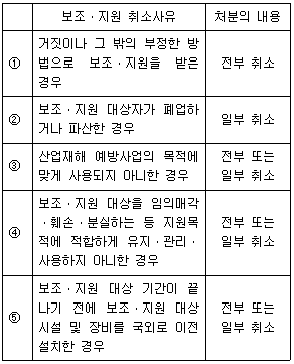
- ①
- ②
- ③
- ④
- ⑤
(정답률: 80%)
2과목: 산업안전일반
26. 다음은 일반적인 공장설비에 적용한 안전성 평가단계에 관한 내용이다. 올바른 순서대로 나열한 것은?
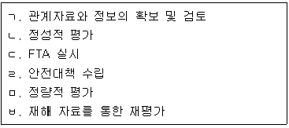
- ㄱ → ㄴ → ㄷ → ㄹ → ㅁ → ㅂ
- ㄱ → ㄴ → ㅁ → ㄹ → ㅂ → ㄷ
- ㄱ → ㄷ → ㄹ → ㅂ → ㅁ → ㄴ
- ㄱ → ㄷ → ㅁ → ㄴ → ㄹ → ㅂ
- ㄱ → ㄹ → ㄴ → ㅁ → ㅂ → ㄷ
(정답률: 79%)
27. A사의 세탁기의 고장밀도함수
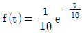
이다. 다음 설명 중 옳지 않은 것은? (단, 수명단위는 년(year)이다.)- 평균고장시간(MTTF)은 10년이다.
- 고장률(h(t))은 0.1/년의 비율로 증가한다.
- 누적고장률
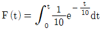
이다. - 누적고장률(F(t))와 신뢰도(R(t))의 합은 1이다.
- 세탁기의 수명은 지수분포를 따른다.
(정답률: 50%)
28. 다음 중 점광원에 관한 조도를 나타내는 식으로 옳은 것은?
- 광도/거리
- 광도2/거리
- 광도/거리2
- (거리/광도)2
- 거리/광도2
(정답률: 89%)
29. 다음 중 시스템 위험분석기법의 설명으로 옳지 않은 것은?
- PHA는 최초 단계의 분석으로 시스템 내의 위험 요소가 얼마나 위험한 상태에 있는가를 정성적으로 평가한다.
- FMEA는 전형적인 정성적, 귀납적 분석방법으로 전체요소의 고장을 유형별로 분석하여 그 영향을 검토한다.
- THERP는 인간의 실수를 정량적으로 평가한다.
- FTA는 정상사상인 재해현상으로부터 기본사상인 재해원인을 귀납적인 분석을 통하여 재해현상과 재해원인의 상호관련을 정확하게 해석하여 안전대책을 검토 할 수 있다.
- CA는 직접 시스템의 손실과 인명의 사상에 연결되는 높은 위험도를 가진 요소나 고장의 형태에 따른 분석을 말한다.
(정답률: 54%)
30. 휴먼에러(Human Error)중 작업에 의한 것이 아닌 것은?
- 조작에러
- 규칙에러
- 보존에러
- 검사에러
- 설치에러
(정답률: 39%)
31. 다음 중 물질안전보건자료(MSDS) 작성 시 포함되어야 할 항목을 모두 고른 것은?
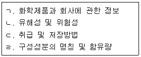
- ㄱ, ㄴ
- ㄴ, ㄷ
- ㄱ, ㄴ, ㄷ
- ㄴ, ㄷ, ㄹ
- ㄱ, ㄴ, ㄷ, ㄹ
(정답률: 87%)
32. 유해ㆍ위험방지계획서 제출 대상 사업장에 해당하지 않는 것은? (단, 아래 답지항의 사업장은 전기 계약용량 300 kW 이상이다.)
- 금속가공제품 중 기계 및 가구 제조업
- 비금속 광물제품 제조업
- 자동차 및 트레일러 제조업
- 식료품 제조업
- 반도체 제조업
(정답률: 65%)
33. 공간의 이용 및 배치에서 부품배치의 원칙으로 옳지 않은 것은?
- 중요성의 원칙
- 기능별 배치의 원칙
- 사용방법의 원칙
- 사용순서의 원칙
- 사용빈도의 원칙
(정답률: 79%)
34. A 공장의 프레스 장비는 평균고장간격(MTBF)이 5년이고, 평균수리시간(MTTR)이 0.5년이다. 프레스 장비의 가용도(Availability)는 약 얼마인가? (단, 프레스 장비의 고장수명은 지수분포를 따르며, 소숫점 아래 셋째자리에서 반올림한다.)
- 0.10
- 0.91
- 1.10
- 5.00
- 20.00
(정답률: 78%)
35. 인간공학에 관한 내용으로 시스템 설계 과정을 올바른 순서로 나열한 것은?
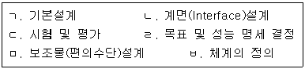
- ㄱ → ㄴ → ㅂ → ㄹ → ㅁ → ㄷ
- ㄱ → ㄹ → ㄴ → ㅂ → ㅁ → ㄷ
- ㄴ → ㄱ → ㅂ → ㄹ → ㅁ → ㄷ
- ㄹ → ㅂ → ㄱ → ㄴ → ㅁ → ㄷ
- ㅂ → ㄱ → ㄴ → ㄹ → ㅁ → ㄷ
(정답률: 47%)
36. 근골격계 질환발생의 원인 중 직접원인이 아닌 것은?
- 숙련도
- 부적절한 자세
- 반복성
- 과도한 힘
- 접촉스트레스(신체적 압박)
(정답률: 78%)
37. 안전교육의 학습지도이론에 관한 내용으로 옳지 않은 것은?
- 자발성의 원리: 학습자 자신이 스스로 자발적으로 학습에 참여하는데 중점을 둔 원리
- 개별화의 원리: 학습자가 지니고 있는 각자의 요구와 능력 등에 알맞은 학습활동의 기회를 마련해 주어야 한다는 원리
- 직관의 원리: 이론을 통해 학습효과를 거둘 수 있다는 원리
- 사회화의 원리: 학습내용을 현실사회의 사상과 문제를 기반으로 하여 학교에서 경험한 것과 사회에서 경험한 것을 교류시키고 공동학습을 통해서 협력적이고 우호적인 학습을 진행하는 원리
- 통합의 원리: ‘학습을 총합적인 전체로서 지도하자’ 원리로, 동시학습(Concomitant Learning)의 원리와 같음
(정답률: 85%)
38. 산업안전보건법령상 사업주가 건설 일용근로자가 아닌 근로자를 채용할 때 해당업무와 관계되는 안전ㆍ보건에 관한 교육내용이 아닌 것은?
- 작업 개시 전 점검에 관한 사항
- 사고 발생 시 긴급조치에 관한 사항
- 작업공정의 유해ㆍ위험과 재해 예방에 관한 사항
- 물질안전보건자료에 관한 사항
- 기계ㆍ기구의 위험성과 작업의 순서 및 동선에 관한 사항
(정답률: 29%)
39. 안전교육의 방법으로 옳지 않은 것은?
- 동기부여를 하는 방향으로 교육한다.
- 어려운 것에서 시작하여 쉬운 것으로 교육한다.
- 오감(五感)을 활용해 교육한다.
- 한 번에 하나씩 교육한다.
- 반복하여 교육한다.
(정답률: 80%)
40. 산업안전보건기준에 관한 규칙상 소음에 관한 설명으로 옳은 것은?
- “소음작업”이란 1일 8시간 작업을 기준으로 80데시벨의 소음이 발생하는 작업을 말한다.
- 100데시벨 이상의 소음이 1일 1시간 발생한 작업은 “강렬한 소음작업”이다.
- “충격소음작업”이란 소음이 1초 이상의 간격으로 발생하는 작업으로서 120데시벨을 초과하는 소음이 1일 1천회 이상 발생하는 작업을 말한다.
- 소음의 작업환경 측정 결과 소음수준이 85데시벨인 사업장에서는 청력보존 프로그램을 실시하여야 한다.
- 115데시벨 이상의 소음이 1일 15분 이상 발생하는 작업은 “강렬한 소음작업”이다.
(정답률: 67%)
41. 산업안전보건법령상 산업안전보건위원회를 설치ㆍ운영해야 할 사업의 종류 및 규모가 아닌 것은?
- 상시 근로자 350명인 농업
- 상시 근로자 60명인 1차 금속 제조업
- 상시 근로자 400명인 정보서비스업
- 상시 근로자 250명인 소프트웨어 개발 및 공급업
- 상시 근로자 400명인 사업지원 서비스업
(정답률: 84%)
42. 산업안전보건법령상 안전ㆍ보건진단을 받아 안전보건개선계획을 수립ㆍ제출하도록 명할 수 있는 사업장이 아닌 것은?
- 산업재해율이 같은 업종 평균 산업재해율의 2배 이상인 사업장
- 작업환경 불량, 화재ㆍ폭발 또는 누출사고 등으로 사회적 물의를 일으킨 사업장
- 사업주가 안전ㆍ보건조치의무를 이행하지 아니하여 사망자가 2명이 발생한 사업장
- 사업주가 안전ㆍ보건조치의무를 이행하지 아니하여 3개월 이상의 요양이 필요한 부상자가 동시에 3명이 발생한 사업장
- 직업병에 걸린 사람이 연간 1명 발생한 사업장
(정답률: 90%)
43. 사업장 위험성 평가에 관한 지침에 관한 설명으로 옳지 않은 것은?
- “유해ㆍ위험요인”이란 유해ㆍ위험을 일으킬 잠재적 가능성이 있는 것의 고유한 특징이나 속성을 말한다.
- “위험성”이란 유해ㆍ위험요인이 부상 또는 질병으로 이어질 수 있는 가능성(빈도)과 중대성(강도)을 조합한 것을 의미한다.
- “위험성 감소대책 수립 및 실행”이란 위험성 결정 결과 허용 불가능한 위험성을 합리적으로 실천 가능한 범위에서 가능한 한 낮은 수준으로 감소시키기 위한 대책을 수립하고 실행하는 것을 말한다.
- “위험성 추정”이란 유해ㆍ위험요인별로 추정한 위험성의 크기가 허용 가능한 범위인지 여부를 판단하는 것을 말한다.
- “기록”이란 사업장에서 위험성평가 활동을 수행한 근거와 그 결과를 문서로 작성하여 보존하는 것을 말한다.
(정답률: 69%)
44. 재해구성 비율에 관한 설명으로 옳지 않은 것은?
- 버드이론에서 인적상해 비율은 41/641이다.
- 버드의 재해발생비율 항목은 물적손실 무상해 항목이 있다.
- 하인리히의 잠재된 위험이 버드의 잠재된 위험보다 낮다.
- 버드이론에서 무상해 비율은 630/641이다.
- 하인리히 이론에서 잠재위험 비율은 300/330이다.
(정답률: 75%)
45. 다음과 같은 재해사례의 조사ㆍ분석 내용이 바르게 연결된 것은?
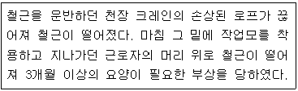
- 발생형태 - 부딪힘
- 기인물-철근
- 가해물 - 크레인
- 불안전한 상태 -적절한 안전모 미착용
- 불안전한 행동 - 위험구역 접근
(정답률: 74%)
46. 재해조사를 수행할 때 유의사항으로 옳지 않은 것은?
- 책임 추궁보다 재발방지를 우선한다.
- 조사는 신속하게 행하고 긴급 조치하여 2차 재해를 방지한다.
- 목격자 등이 증언하는 추측을 바탕으로 재해조사를 진행한다.
- 객관적인 입장에서 공정하게 2인 이상이 조사한다.
- 사람과 기계설비 양면의 재해 요인을 모두 도출한다.
(정답률: 87%)
47. 다음 설명을 보고 A기업의 근로자 1인이 입사부터 정년까지 경험하는 재해건수는? (단, 소숫점 아래 셋째자리에서 반올림한다.)
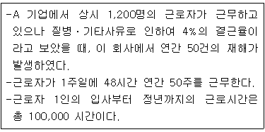
- 1.81
- 4.34
- 17.36
- 18.08
- 43.40
(정답률: 56%)
48. 안전보건관리조직에 관한 설명으로 옳은 것은?
- 공사금액 100억원인 건설업의 사업장은 산업안전보건위원회를 설치해야한다.
- 산업안전보건위원회의 위원 중 산업보건의는 노사합의에 의해서만 선정된다.
- 안전보건관리조직 중 라인 조직형은 권한이 직선식으로 행사되므로 200명∼300명 정도의 중견 기업에 적합하다.
- 안전보건관리조직 중 라인-스텝 복합형은 1,000명 이상의 대기업에 적합하다.
- 상시근로자 100명인 자동차 및 트레일러 제조업을 하는 사업장의 산업안전보건위원회는 안전관리자나 보건관리자 중에 1명만 있으면 된다.
(정답률: 77%)
49. 무재해 시간의 계산방식으로 옳지 않은 것은?
- 무재해 시간의 산정은 실근로자의 수와 실근무시간을 곱한다.
- 3일미만의 경미한 부상은 무재해로 간주한다.
- 사무직은 하루 통산 8시간을 근무시간으로 산정한다.
- 무재해 개시 후 재해가 발생하면 처음(0시간)부터 다시 시작한다.
- 업무시간 외에 발생한 재해 중 작업 개시전의 작업준비 및 작업종료 후의 정리정돈 과정에서 발생한 재해도 포함한다.
(정답률: 50%)
50. 제조물 책임법상 ‘결함’에 해당하는 것을 모두 고른 것은?
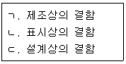
- ㄱ
- ㄷ
- ㄱ, ㄷ
- ㄴ, ㄷ
- ㄱ, ㄴ, ㄷ
(정답률: 88%)
3과목: 기업진단ㆍ지도
51. A기업에서는 평가등급을 5단계로 구분하고 가능한 정규분포를 이루도록 등급별 기준인원을 정하였으나, 평가자에 의하여 다음의 표와 같은 결과가 나타났다. 이와 같은 평가결과의 분포도상의 오류는? (평가등급의 상위순서는 A, B, C, D, E 등급의 순이다.)
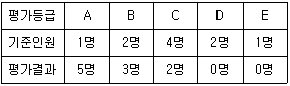
- 논리적오류
- 대비오류
- 관대화경향
- 중심화경향
- 가혹화경향
(정답률: 87%)
52. 조직구조에 관한 설명으로 옳지 않은 것은?
- 가상네트워크 조직은 협력업체와 갈등해결 및 관계유지에 상대적으로 적은 시간이 필요하다.
- 기능별 조직은 각 기능부서의 효율성이 중요할 때 적합하다.
- 매트릭스 조직은 이중보고 체계로 인하여 종업원들이 혼란을 느낄 수 있다.
- 사업부제 조직은 2개 이상의 이질적인 제품으로 서로 다른 시장을 공략할 경우에 적합한 조직구조이다.
- 라인스텝 조직은 명령전달과 통제기능을 담당하는 라인과 관리자를 지원하는 스텝으로 구성된다.
(정답률: 77%)
53. 인적자원관리에서 이루어지는 기능 또는 활동에 관한 설명으로 옳은 것은?
- 직접보상은 유급휴가, 연금, 보험, 학자금지원 등이 있다.
- 직무평가는 구성원들의 목표치와 실적을 비교하여 기여도를 판단하는 활동이다.
- 현장직무교육은 직무순환제, 도제제도, 멘토링 등이 있다.
- 직무분석은 장래의 인적자원 수요를 파악하여 인력의 확보와 배치, 활용을 위한 계획을 수립하는 것이다.
- 직무기술서의 작성은 직무를 성공적으로 수행하는데 필요한 작업자의 지식과 특성, 능력 등을 문서로 만드는 것이다.
(정답률: 53%)
54. 조직문화에 관한 설명으로 옳은 것을 모두 고른 것은?
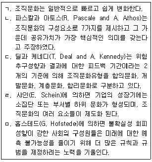
- ㄱ, ㄴ, ㄹ
- ㄴ, ㄷ, ㄹ
- ㄴ, ㄷ, ㅁ
- ㄴ, ㄹ, ㅁ
- ㄷ, ㄹ, ㅁ
(정답률: 43%)
55. 생산시스템에 관한 설명으로 옳지 않은 것은?
- VMI는 공급자주도형 재고관리를 뜻한다.
- MRP는 자재소요량계획으로 제품생산에 필요한 부품의 투입시점과 투입량을 관리하는 시스템이다.
- ERP는 조직의 자금, 회계, 구매, 생산, 판매 등의 업무흐름을 통합관리하는 정보시스템이다.
- SCM은 부품 공급업체와 생산업체 그리고 고객에 이르는 제반 거래 참여자들이 정보를 공유함으로써 고객의 요구에 민첩하게 대응하도록 지원하는 것이다.
- BPR은 낭비나 비능률을 점진적이고 지속적으로 개선하는 기능중심의 경영관리기법이다.
(정답률: 32%)
56. 인형을 판매하는 A사는 경제적주문량(EOQ) 모형을 이용하여 재고정책을 수립하려고 한다. 다음과 같은 조건일 때 1회의 경제적주문량은?
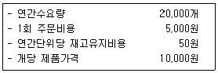
- 1,000개
- 2,000개
- 3,000개
- 3,500개
- 4,000개
(정답률: 84%)
57. 동기부여이론에 관한 설명으로 옳지 않은 것은?
- 데시(E. Deci)의 인지평가이론에 의하면 외재적 보상이 주어지면 내재적 동기가 증가된다.
- 로크(E. Locke)의 목표설정이론에 의하면 목표가 종업원들의 동기유발에 영향을 미치며, 피드백이 주어지지 않을 때 보다는 피드백이 주어질 때 성과가 높다.
- 엘더퍼(C. Alderfer)의 ERG이론은 매슬로우(A. Maslow)의 욕구단계이론과 달리 좌절-퇴행 개념을 도입하였다.
- 브룸(V. Vroom)의 기대이론에 의하면 종업원의 직무수행 성과를 정확하고 공정하게 측정하는 것은 수단성을 높이는 방법이다.
- 아담스(J. Adams)의 공정성이론에 의하면 종업원은 자신과 준거집단이나 준거인물의 투입과 산출 비율을 비교하여 불공정하다고 지각하게 될 때 공정성을 이루는 방향으로 동기유발 된다.
(정답률: 48%)
58. 단체교섭의 방식에 관한 설명으로 옳지 않은 것은?
- 기업별 교섭은 특정기업 또는 사업장 단위로 조직된 노동조합이 단체교섭의 당사자가 되어 기업주 또는 사용자와 교섭하는 방식이다.
- 공동교섭은 상부단체인 산업별, 직업별 노동조합이 하부단체인 기업별 노조나 기업 단위의 노조지부와 공동으로 지역적 사용자와 교섭하는 방식이다.
- 대각선 교섭은 전국적 또는 지역적인 산업별 노동조합이 각각의 개별 기업과 교섭하는 방식이다.
- 통일교섭은 전국적 또는 지역적인 산업별 또는 직업별 노동조합과 이에 대응하는 전국적 또는 지역적인 사용자와 교섭하는 방식이다.
- 집단교섭은 여러 개의 노동조합 지부가 공동으로 이에 대응하는 여러 개의 기업들과 집단적으로 교섭하는 방식이다.
(정답률: 60%)
59. 제품생애주기(Product Life Cycle)에 관한 설명으로 옳지 않은 것은?
- 도입기는 고객의 요구에 따라 잦은 설계변경이 있을 수 있으므로 공정의 유연성이 필요하다.
- 쇠퇴기는 제품이 진부화되어 매출이 줄어든다.
- 성장기는 수요가 증가하므로 공정중심의 생산시스템에서 제품중심으로 변경하여 생산능력을 크게 확장시켜야 한다.
- 성숙기는 성장기에 비하여 이익 수준이 낮다.
- 성장기는 도입기에 비하여 마케팅 역할이 크게 요구되는 시기이다.
(정답률: 82%)
60. 작업장에서 사고와 질병을 유발하는 위해요인에 관한 설명으로 옳은 것은?
- 5요인 성격 특질과 사고의 관계를 보면, 성실성이 낮은 사람이 높은 사람보다 사고를 일으킬 가능성이 더 낮다.
- 소리의 수준이 10 dB까지 증가하면 소리의 크기는 10배 증가하며, 20 dB까지 증가하면 20배 증가한다.
- 컴퓨터 자판 작업이나 타이핑 작업을 많이 하는 사람들은 수근관 증후군(carpal tunnel syndrome)의 위험성이 높다.
- 직장에서 소음에 대한 노출은 청각 손상에 영향을 주지만 심장혈관계 질병과는 관련이 없다.
- 사회복지기관과 병원은 직장 폭력이 발생할 위험성이 가장 적은 장소이다.
(정답률: 58%)
61. 심리검사에 관한 설명으로 옳은 것을 모두 고른 것은?
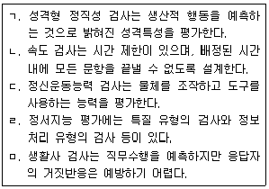
- ㄱ, ㄴ, ㄹ
- ㄱ, ㄷ, ㄹ
- ㄱ, ㄹ, ㅁ
- ㄴ, ㄷ, ㄹ
- ㄴ, ㄷ, ㅁ
(정답률: 45%)
62. 직무스트레스 요인에 관한 설명으로 옳지 않은 것은?
- 역할 내 갈등은 직무상 요구가 여럿일 때 발생한다.
- 역할 모호성은 상사가 명확한 지침과 방향성을 제시하지 못하는 경우에 유발된다.
- 작업부하는 업무 요구량에 관한 것으로 직접 유형과 간접 유형이 있다.
- 요구-통제 모형에 의하면 통제력은 요구의 부정적 효과를 줄이거나 완충해 주는 역할을 한다.
- 대인관계 갈등과 타인과의 소원한 관계는 다양한 스트레스 반응을 유발할 수 있다.
(정답률: 32%)
63. 인사선발에 관한 설명으로 옳은 것은?
- 선발검사의 효용성을 증가시키는 가장 중요한 요소는 검사 신뢰도이다.
- 인사선발에서 기초율이란 지원자들 중에서 우수한 지원자의 비율을 말한다.
- 잘못된 불합격자(false negative)란 검사에서 불합격점을 받아서 떨어뜨렸고, 채용하였더라도 불만족스러운 직무수행을 나타냈을 사람이다.
- 인사선발에서 예측변인의 합격점이란 선발된 사람들 중에서 우수와 비우수 수행자를 구분하는 기준이다.
- 선발률과 예측변인의 가치 간의 관계는 선발률이 낮을수록 예측변인의 가치가 더 커진다.
(정답률: 29%)
64. 인간의 정보처리 능력에 관한 설명으로 옳지 않은 것은?
- 경로용량은 절대식별에 근거하여 정보를 신뢰성 있게 전달할 수 있는 최대용량이다.
- 단일 자극이 아니라 여러 차원을 조합하여 사용하는 경우에는 정보전달의 신뢰성이 감소한다.
- 절대식별이란 특정 부류에 속하는 신호가 단독으로 제시되었을 때 이를 식별할 수 있는 능력이다.
- 인간의 정보처리 능력은 단기기억에 대한 처리 능력을 의미하며, 절대식별 능력으로 조사한다.
- 밀러(Miller)에 의하면 인간의 절대적 판단에 의한 단일 자극의 판별범위는 보통 5~9가지이다.
(정답률: 67%)
65. 소음의 영향에 관한 설명으로 옳지 않은 것은?
- 의미있는 소음이 의미없는 소음보다 작업능률 저해 효과가 더 크게 나타난다.
- 강력한 소음에 노출된 직후에 일시적으로 청력이 저하되는 것을 일시성 청력손실이라하며, 휴식하면 회복된다.
- 초기 소음성 청력손실은 대화 범주 이상의 주파수에서 생겨 대화에 장애를 느끼지 못하다가 이후에 다른 주파수까지 진행된다.
- 소음 작업장에서 전화벨 소리가 잘 안 들리고, 작업지시 내용 등을 알아듣기 어려운 현상을 은폐효과(masking effect)라고 한다.
- 일시적 청력 손실은 300 Hz~3,000 Hz 사이에서 가장 많이 발생하며, 3,000 Hz 부근의 음에 대한 청력저하가 가장 심하다.
(정답률: 58%)
66. 집단 의사결정에 관한 설명으로 옳지 않은 것은?
- 팀의 혁신을 촉진할 수 있는 최적의 상황은 과업에 대한 구성원 간의 갈등이 중간정도일 때다.
- 집단극화는 집단 구성원의 소수가 모험적인 선택을 할 때 이를 따르는 상황에서 발생한다.
- 집단사고는 개별 구성원의 생각으로는 좋지 않다고 생각하는 결정을 집단이 선택할 때 나타나는 현상이다.
- 집단사고는 집단 응집성, 강력한 리더, 집단의 고립, 순응에 대한 압력 때문에 나타난다.
- 집단사고를 예방하기 위해서 다양한 사회적 배경을 가진 집단 구성원이 있는 것이 좋다.
(정답률: 58%)
67. 행위적 관점에서 분류한 휴먼에러의 유형에 해당하는 것은?
- 순서 오류(sequence error)
- 피드백 오류(feedback error)
- 입력 오류(input error)
- 의사결정 오류(decision making error)
- 출력 오류(output error)
(정답률: 65%)
68. 직무분석을 위한 정보를 수집하는 방법의 장점과 한계에 관한 설명으로 옳은 것을 모두 고른 것은?
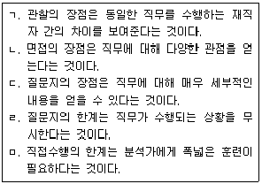
- ㄱ, ㄷ, ㄹ
- ㄴ, ㄷ, ㄹ
- ㄴ, ㄷ, ㅁ
- ㄴ, ㄹ, ㅁ
- ㄷ, ㄹ, ㅁ
(정답률: 22%)
69. 직무 배치 후 유해인자에 대한 첫 번째 특수건강진단의 시기 및 주기로 옳지 않은 것은?
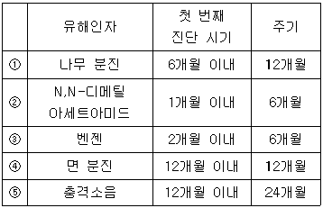
- ①
- ②
- ③
- ④
- ⑤
(정답률: 67%)
70. 다음 중 노출기준(occupational exposure limits)에 관한 설명으로 옳은 것은?
- 고용노동부 노출기준은 작업환경 측정 결과의 평가와 작업환경 개선 기준으로 사용 할 수 있다.
- 일반 대기오염의 평가 또는 관리상의 기준으로는 사용할 수 없으나, 실내공기오염의 관리 기준으로는 사용할 수 있다.
- MSDS에서 아세톤의 노출기준은 500 ppm, 폭발하한한계(LEL)는 2.5%로 표시되었다면, LEL은 노출기준보다 500배 높은 수준이다.
- 우리나라는 작업자가 노출되는 소음을 누적노출량계로 측정할 때 Threshold 80 dB, Criteria 90 dB, Exchange rate 5 dB 기준을 적용하므로, 만일 78 dBA에 8시간 동안 노출되었다면 누적소음량은 10∼50 % 사이에 있을 것이다.
- 최고노출기준(C)은 1일 작업시간 중 잠시라도 넘어서는 안 되는 농도이므로, 만일 15분 동안 측정했다면 측정치를 15로 보정하여 노출기준과 비교한다.
(정답률: 54%)
71. CHARM(Chemical Hazard Risk Management) 시스템에 따른 사업장의 화학물질에 대한 위험성평가에 있어서 작업환경측정 결과를 활용한 노출수준 등급구분으로 옳지 않은 것은?
- 4등급 - 화학물질 노출기준 초과
- 3등급 - 화학물질 노출기준의 50% 이상 ～ 100 % 이하
- 2등급 - 화학물질 노출기준의 10% 이상 ～ 50 % 미만
- 1등급 - 화학물질 노출기준의 10 % 미만
- 1등급 상향조정 - 직업병 유소견자가 확인된 경우
(정답률: 85%)
72. 산업위생전문가가 수행한 활동으로 옳지 않은 것은?
- 트리클로로에틸렌을 사용하는 작업자가 하루 10시간 동안 이 물질에 노출되는 것을 발견하고, 노출기준을 보정하여 측정치를 평가하였다.
- 결정체 석영은 노출기준이 호흡성 분진으로 되어 있어 이에 노출되는 작업자에 대하여 은막여과지로 채취하였다.
- 유성페인트를 여러 가지 유기용제가 포함된 시너로 희석하여 도장하는 작업장에서 노출평가 시 각각의 노출기준과 상호작용을 고려하여 평가하였다.
- 발암성이 있는 목재분진도 있으므로 원목의 재질을 조사하여 평가하였다.
- 폭이 넓은 도금조에 측방형 후드가 설치되어 있는 작업장에서 적절한 제어속도가 나오지 않아 이를 푸쉬-풀 후드로 교체할 것을 제안하였다.
(정답률: 57%)
73. 다음 유해인자의 평가 및 인체영향에 관한 설명으로 옳은 것은?
- 호흡성 입자상 물질(a)과 흡입성 입자상 물질(b)의 농도비(a/b)는 일반적으로 용접작업장이 목재가공작업장 보다 크다.
- 석면이 치명적인 이유는 폐포에 있는 대식세포가 석면에 전혀 접근하지 못하여 탐식작용을 못하기 때문이다.
- 옥외 작업장에서 누출될 수 있는 불화수소를 관리하기 위하여 작업환경 노출기준인 0.5 ppm을 3으로 나누어(24시간 노출) 0.17 ppm을 기준으로 정하였다.
- 석영, 크리스토발라이트, 트리디마이트는 모두 실리카가 주성분인 물질로 암을 유발한다.
- 주성분이 카드뮴인 나노입자는 피부흡수를 우선적으로 고려하여야 한다.
(정답률: 53%)
74. 다음 작업환경 측정 및 평가에 관한 설명으로 옳은 것은?
- 가스상 물질을 시료 채취할 때 일반적으로 수동식 방법이 능동식 방법 보다 정확성과 정밀도가 더 높다.
- 유기용제나 중금속의 검출한계는 시료를 반복 분석하여 구할 수 있지만, 중량분석을 하는 호흡성 분진은 검출한계를 구할 수 없다.
- 월 30시간 미만인 임시 작업을 행하는 작업장의 경우 법적으로 작업환경측정 대상에서 제외될 수 있다.
- 작업환경측정 자료에서 만일 기하표준편차가 1미만이라면 이 통계치는 높은 신뢰성을 가졌다고 할 수 있다.
- 콜타르피치, 코크스오븐배출물질, 디젤배출물질에 공통적으로 함유된 산업보건학적 유해인자 중 하나는 다핵방향족탄화수소이다.
(정답률: 44%)
75. 산업위생 분야에 관한 설명으로 옳지 않은 것은?
- 산업위생 목적은 궁극적으로 근로환경 개선을 통한 근로자의 건강보호에 있다.
- 국내 사업장의 산업위생 분야를 관장하는 행정부처는 고용노동부이다.
- B. Ramazzini는 직업병의 원인으로 작업환경 중 유해물질과 부자연스러운 작업 자세를 제안하였다.
- 사업장에서 산업보건 직무담당자를 보건관리자라고 한다.
- 세계보건기구는 산업보건 관련 국제연합기구로서 근로조건의 개선도모를 목적으로 1919년에 설치되었다.
(정답률: 63%)